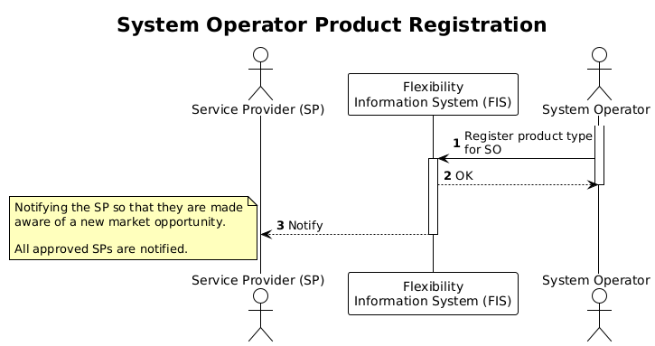

Notification and Notice
Many of the interactions with the Flexibility Information System (FIS) trigger notifications and notices. This section explains what they are, why we need them and how they differ.
While notifications are a required function in the FIS and automatically inform parties when events occur in the system, notices are a supporting feature that help users identify actions required based on the state of data in FIS. In short, notifications keep parties informed and notices help them act.
The following sections describe each of them in more detail and explain how they are used in the FIS.
Notification
A notification is a resource that is used to inform a specific party that an event occurred in the FIS. The purpose of the notification is to convey information to enable parties to act according to the business processes.
An event is typically registered when a resource is created, updated or deleted in the system. For each event, FIS will pick out specific recipients and create a notification for them. Recipients are selected based on the rules in the "Notifications" section of each resource.
A notification is little more than a pointer to the event and the recipient. An example notification looks like this:
{
"id":1314,
"acknowledged":false,
"event_id":955,
"party_id":125,
"recorded_by":0,
"recorded_at":"2025-11-07T08:58:31.484929+00:00"
}
As you can see, it points to an event (event_id) and a party (party_id). We
can think of it as an envelope that contains a reference to an event and is
addressed to the party.
The acknowledged field indicates whether the party has seen the notification
or not. The party must acknowledge the notification to let FIS know that it has
been informed about the event. This is done by updating the specific
notification.
For information about notification as a resource in the API see notification.
Event
You might wonder what an event looks like. An event contains information about something that has happened, but does not contain the actual data that triggered the event. For instance, you get to know that controllable unit X was updated, but not what the update contained. This is also known as thin events. Consider this example.
{
"id":955,
"specversion":"1.0",
"type":"no.elhub.flex.service_providing_group_grid_suspension.delete",
"data":null,
"source":"/service_providing_group_grid_suspension/14",
"time":"2025-11-07T08:58:31.480365+00:00"
}
As you can see, this event points to a specific resource (source) that was
deleted (type).
The data field is null because this is a delete event. For some events, such
as updates, this field contains more information about what changed, for
instance what fields were updated, but not their previous and new values.
For information about events as a resource in the API see event.
Example use of notification
When a procuring system operator registers a new product type they intend to procure, a notification is made available for all approved service providers (SP). When the SPs retrieve the notification they are made aware of a new market opportunity and can decide whether or not to act on it. Without the notification, SPs would not know that the system operator intends to procure a new product type.

Notice
A notice is a resource that alerts a party about a certain state in the system that requires them to take action. For instance, a system operator will get a notice if they have a pending application from a SP. Notices are also used to highlight inconsistencies or invalid states in the system.
The purpose of notices is to enable the parties to easily see what actions that are expected from them. They also help ensure and maintain consistency between the resources and in the data.
Notices complement notifications by highlighting situations where action is needed. In this way, notices function as a task list that helps parties complete required actions or fix inconsistencies.
A notice looks like this.
{
"data":null,
"party_id":127,
"source":"/service_providing_group_product_application/35",
"type":"no.elhub.flex.service_providing_group_product_application.status.requested"
}
As you can see, it has some similarities with events and notifications. It
points to a specific resource (source) and is addressed to a specific party
(party_id). The type field indicates the type of notice - basically what
action is required.
The actions required for each type of notice is defined in the resource documentation for notice. The notice is cleared when the required task is completed.
Example of notification and notice
When a controllable unit (CU) is registered in FIS by a SP, the connecting system operator needs to specify the grid node for the CU. When the CU is first registered, the connecting system operator will get a notification that the CU was created. This implicitly informs them that they need to set the grid node for the CU. It is expected that they act on it.
Notices are independent of the CU create event and only based on the available data in the system. When FIS notices that there is a CU with a missing grid node, regardless of age, a notice will be created for the system operator. This helps the connecting system operator to explicitly see that an action is required from them.
In this case, both the notification and the notice point to the same action that is required from the system operator. However, the notice will remain until the grid node is set, while the notification is only created once when the CU is created.
Example of data inconsistency notice
Imagine that a SP has a current contract with an end user on a controllable unit (CU). This contract will be stored in FIS as a controllable unit service provider (CUSP) resource with valid time start time but no end time. This unbounded valid time indicates that the contract is currently valid with no planned end.
If the end user then moves, the end user's relationship with the accounting point (and thus the CU) will be ended. FIS will receive information about this from Elhub. In such cases, FIS will not automatically end the CUSP resource, but it will create a notice for the SP to fix the inconsistency. The SP must then update the CUSP resource to end the contract.